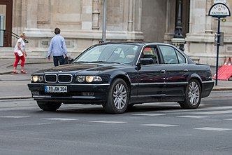

7 series e31

BMW 7-й серии (E38) — третье поколение люксовых[en] автомобилей 7-й
серии, выпускавшихся с 1994 по 2001 год немецким автопроизводителем BMW.
Элегантные и динамичные, несмотря на большие размеры, автомобили имели
обновлённый в соответствии с современными вкусами внешний вид. Наряду с
бензиновыми двигателями, впервые в истории фирмы на автомобили класса
люкс стали устанавливать дизельные моторы. Помимо моделей с удлинённой
колёсной базой и версий со специальной защитой[en], выпускался также
лимузин. Всего было изготовлено 327 598 автомобилей[6].